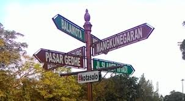
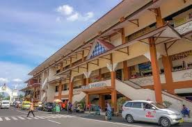
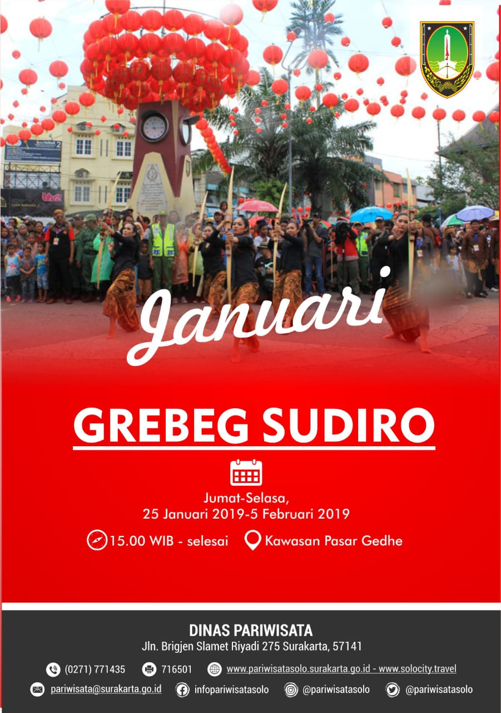
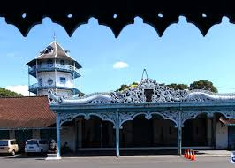
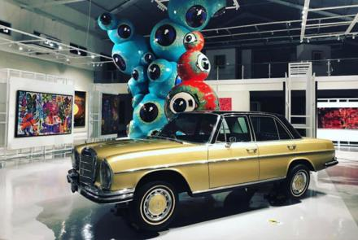
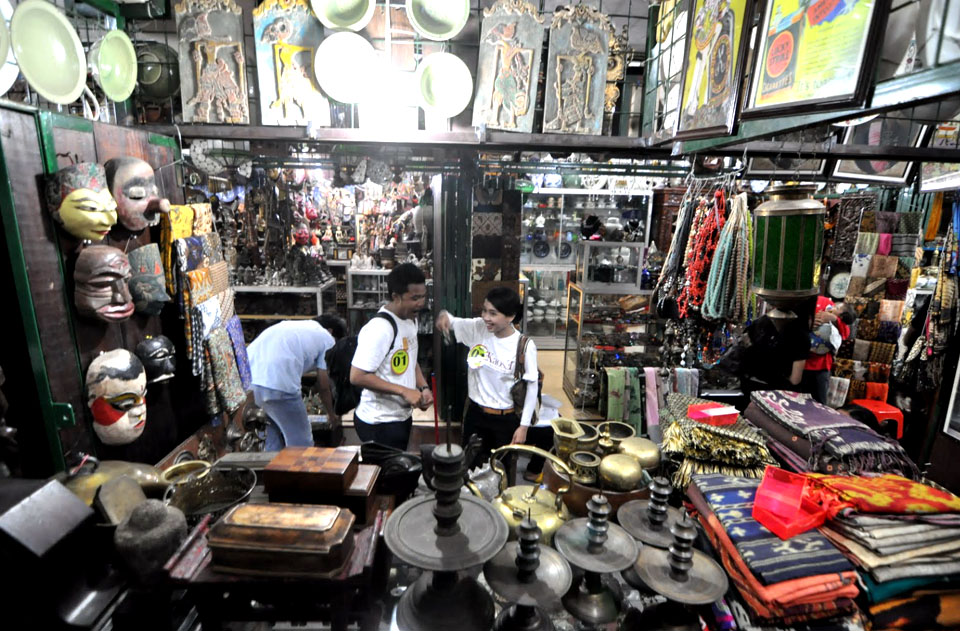
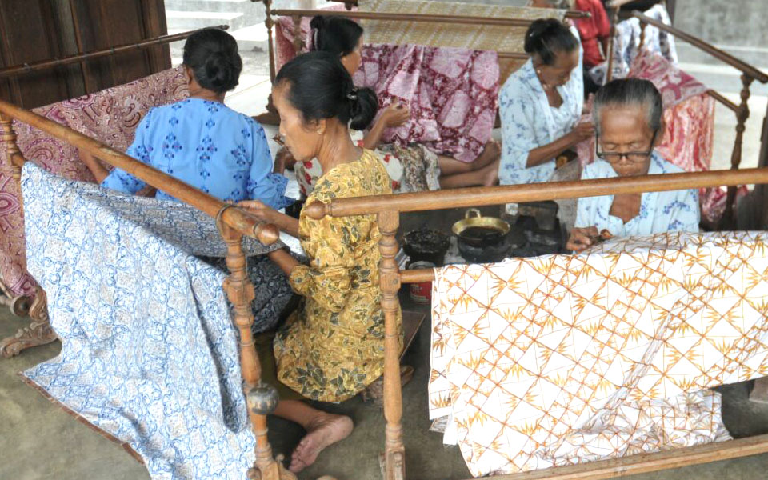

Sejarah Kota Solo
Sejarah kuno Solo dimulai ketika ditemukannya manusia purba Homo erectus di Sangiran, Kabupaten Sragen. Selain itu sebuah penelitianmenyebutkan bahwa nama Solo ada karena Kota Surakarta didirikan di sebuah desa bernama Desa Sala, di tepi Sungai Solo. Sampai tahun 1744, Solo dikenal sebagai desa terpencil dan tenang, berjarak 10 km ke timur dari Kartusura, pusat Kerajaan Mataram pada waktu itu. Tetapi pada masa kepemimpinan Susuhan Mataram Pakubuwono II, Kerajaan Mataram didukung China melakukan perlawanan terhadap Belanda. Sebagai akibatnya Kartusura akhirnya diduduki oleh Belanda. Kondisi ini menghatuskan Pakubuwono II mencari tempat yang lebih menguntungkan untuk membangun kembali kerajaannya dan pada tahun 1745 kerajaan di Kartusura dibongkar dan diangkut dalam sebuah prosesi ke Surakarta, di tepi Sungai Solo. Namun kejayaan kerajaan terus menurun, pada tahun 1757 sebuah kerajaan saingan dari Mangkunegoro didirikan tepat di pusat Solo. Namun bangsawan dengan bijak menghindari pertempuran dan mencurahkan energinya untuk mengembangkan seni dan budaya kerajaan yang anggun dan menawan. Paviliun gamelan menjadi arena baru persaingan, masing-masing kerajaan berkompetisi menghasilkan budaya kerajaan yang lebih halus dan kondisi ini masih berlanjut sampai sekarang.
Kota Solo, Kota MICE selanjutnya
Solo menjadi salah satu kota tujuan wisata di Indonesia dan telah ditetapkan sebagai kota MICE. MICE menunjuk Kota Solo karena memiliki potensi bisnis yang besar, pertumbuhan ekonomi yang stabil, jumlah wisata yang terus meningkat dan sukses melakukan branding kota. Dengan penetapan sebagai kota MICE, Solo selau berantusias mengadakan berbagai acara berskala nasional dan internasional misalnya Asia Pasific Ministerial Conference on Housing and Urban Development, APMCHUD (Konferensi Menteri Asia Pasifik mengenai perumahan dan perkembangan kota) yang melibatkan delegasi dari 28 negara, kemudian Conference and Expo World Heritage Cities, WHC (Konferensi dan ekspo kota-kota warisan budaya dunia), National Congress APEKSI, Ethnic Music Festival, SIEM (Festival musik etnik), The International Performing Art Mart (IPAM), Solo Batik Carnival dan berbagai cara lainnya yang berkaitan dengan pariwisata, seni dan budaya.
event Kota Solo bulan Januari
Grebeg Sudiro Jumat - Selasa, 25 Januari 2019 - 05 Februari 2019
Wisata di Kota Solo
Keraton Kasunanan Solo

Tumurun private Museum

Pasar Antik Triwindu

Kampung Batik Laweyan